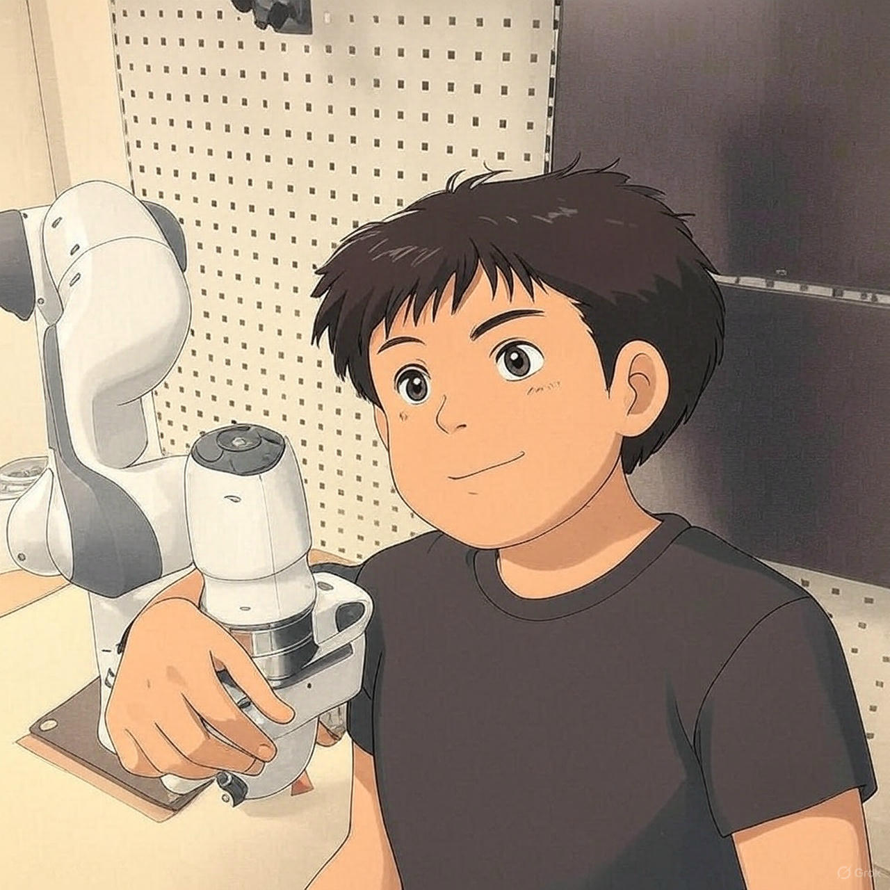

|
Omkar Bhoite Upcoming PhD Student at NTNU [Norway] Graduated with masters in Robotics & AI with specialization in Computer Science for Autonomous Driving, from KTH Royal Institute of Technology [Sweden] & exchange student at Eötvös Loránd University [Hungary] Passionately curious about robots, AI, machine learning, mathematics, computer vision, astrophysics, sensor systems, physics, startups & photography. |
 |
Research Papers |

|
Indoor vehicle-in-the-loop simulation of unmanned micro aerial vehicle with artificial companion
A. Hiba, V. Kortvelyesi, A. Kiskaroly, Kfir Aberman, Omkar Bhoite, P. David, A. Majdik IEEE, 2023 VIL framework (an extension of HIL) for drone arena, with a use case of a companion drone in cooperative navigation. |
Thesis |

|
Vehicle in the loop simulation with real unmanned aerial vehicle (UAV) &
artificial companion drone
[Thesis]
Supervisor: Iván Eichhardt, Antal Hiba Drone navigation enhancement using companion drone in VIL simulation |
Research Projects |
|
|
ML algorithm to perform autonomous driving on a model car, 1/10th a size of an actual car
Shounak, Alberto, Adithya, Vignesh, Omkar Semi-finalist of Bosch Future Mobility Challenge 2020-2021 |

|
Neuromorphic Vision data pipeline
Supervisor: Prof. Jorg Conradt, Juan Pablo Romero Bermudez C++ based software to stream events from neuromorphic camera to NN, for generating application specific commands |
|
|
Humaniod robot head motion control using ROS
Supervisor: Prof. Jorg Conradt, Juan Pablo Romero Bermudez ROS based humaniod robot head motion control, for emulating human head-eye movement |
|
Obiviously I didn't design the website template, added few modifications though. You can use the following original source code. |